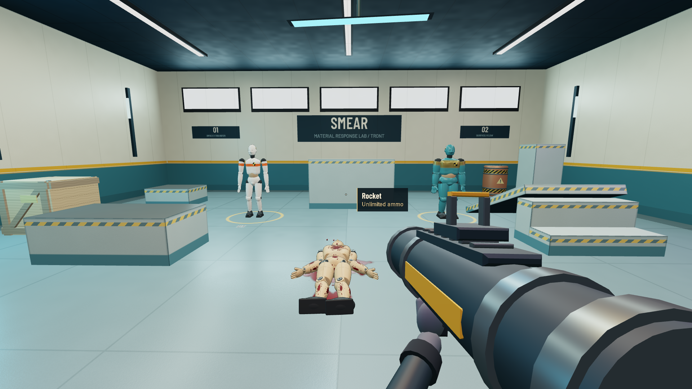
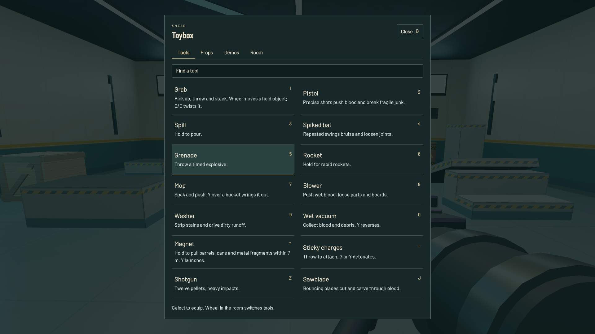

Open SMEAR 47A readable room.
A shorter blank wait.
Right mouse grabs with every weapon. Weapon, unlimited ammo and reload status sit beside the crosshair. Equip and carrying hints fade. Y handles alternate actions; G still detonates charges.

Actual V47 gameplay after the equip hints expire.Firefox startup, recorded
The room renders before the remaining programs finish. You can capture the mouse and look around; physics and weapons start when their programs are ready. The loader stays centered and never exposes a premature pause menu.
Silent browser-viewport recording. Frame durations retain real elapsed time. Startup measurements below were taken separately.
| Isolated Firefox profile | First room view | Full readiness |
|---|
| V46 fresh | 17.75 s | 17.75 s |
| V47 fresh | 2.53 s | 17.79 s |
| V47 reload | 1.93 s | 8.57 s |
Full Firefox compilation remains slow. These measurements demonstrate earlier presentation, not a full-start speedup. Local offline HTML on the same hardware; fresh browser profiles, existing OS/driver caches. Camera updates during compilation occur between shader jobs.
Text you can read

16px full-width descriptions, 20px tool names, stronger SDF coverage and device-pixel rendering. Only the selected category is constructed.Checks and source notes
All fourteen tools pass native right-grab/release checks. Menu navigation, alternate actions, reload status, shader validation, Chrome/Firefox gameplay and the native 3000×1800 performance gate passed. Machine-readable evidence.
Reviewed Three.js per-object asynchronous compilation and progress and the Babylon worker-rendering example. These informed the staging approach; those examples were not benchmarked against SMEAR.
Game HTML SHA-256
49edd19ef1cdca7b241a7163ca4534d433fb65770854210d4c1d79d61937b665
Previous weapon/hand inspection MP4s